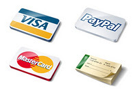
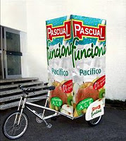

Iniciando tu Propia Empresa de Reclutamiento
Thu, 03 Nov 2011 15:19:38 PDT
Dentro de todas las actividades comerciales que existen, esta probablemente sea una de las más nobles pues tiene que ver justamente con la selección del recurso humano que toda empresa o institución necesita.
Hoy te comparto una guía de pasos para iniciar uno de esos negocios de gran popularidad y demanda: tu propia empresa de reclutamiento.
Ya sea para una empresa grande, pequeña, institución gubernamental o bien a título personal, las empresas de contrataciones proveen una variedad de interesantes servicios que las hacen negocios muy rentables.
Así pues, si este negocio es de tu interés, toma papel y lápiz y describe los siguientes elementos:
- Define con amplitud los servicios que ofrecerás como: búsqueda de candidatos, exámenes psicométricos, evaluación de prospectos, polígrafo, estudios socioeconómicos, evaluaciones técnicas, outsorcing, capacitaciones, etc.
- Prepara tu plan de negocio y un presupuesto considerando los costos para poder brindar dichos servicios. Por ejemplo, si deseas ofrecer el servicio de pruebas poligráficas deberás considerar la adquisición del equipo y la capacitación de tus poligrafistas o bien la subcontratación del mismo.
- Define tu modalidad de trabajo: oficina de reclutamiento (offline) o bien a través de sistemas online de bases de datos.
- Define tu estrategia de ventas. ¿Qué medios utilizarás para promover tus productos o servicios? ¿Cómo llegarás hasta tus potenciales clientes? ¿Cómo captaras a los candidatos? ¿Qué harás mejor que la competencia?
- Define tu estrategia de Marketing. ¿Cómo promocionarás tus servicios? Recuerda que existen diversidad de medios con distintos costos y niveles de efectividad, por lo que deberás determinar cuáles utilizaras y cuánto invertirás inicialmente en promoción publicitaria a fin de atraer a tus potenciales clientes. Además, es muy importante que separes tu estrategia en 2 ramas ya que este modelo de negocios abarca tanto al contratante como al contratado.
-
Contratante: Este debe ser contactado a través de telemarketing o visitas personalizadas para ofrecerles tu catálogo de servicios pues es a ellos a quienes les cobras por cada candidato seleccionado a satisfacción.
-
Contratado: Son los candidatos a reclutar y quienes serán evaluados para selección los cuales deben ser captados por distintos medios escritos, radio, televisión o Internet con argumentos tales como: plazas de empleo para ingenieros, trabajo abogados, trabajo aeronáutica y cuando sea necesario, regionalizarlo como ofertas de empleo Madrid o bien "plazas disponibles en México".
- Define que infraestructura necesitas. Si vas a montar una oficina deberás entonces presupuestar todo tu mobiliario de oficina, computadoras, teléfonos, etc. Así como las dimensiones del espacio que necesitarás y la ubicación estratégica de la misma que puede ser un centro ejecutivo o bien un espacio acomodado en tu casa, lo cual es muy conveniente sobre todo al inicio.
- Define que recurso humano requerirás. Desde el momento que brindas el servicio de pruebas psicométricas, entonces será indispensable contratar los servicios de un psicólogo industrial o profesional de recursos humanos. Así mismo deberás considerar los servicios de una secretaria, mensajero, asistentes y desde luego un ejecutivo de ventas que busque y atraiga a los clientes.
- Define las tarifas que cobrarás. Esto es muy importante pues al momento de abrir tus puertas, ya deberás contar con un catálogo de precios de tus servicios que contemple las diferentes variables y que sea competitivo.
- Define el monto de la inversión inicial. Sumamente importante pues acá deberás contemplar cuánto dinero necesitas para este negocio y cómo lo conseguirás. Si tienes ahorrada una parte, deberás describir claramente cómo complementarás dicho capital y cómo será pagado y en cuanto tiempo.
- Define los costos para operar mensualmente tu empresa de reclutamiento. Acá debes contemplar todo lo relacionado con servicios, salarios, inversión publicitaria, honorarios profesionales, servicios subcontratados y todo aquello que debas pagar mes a mes y que mantendrá funcionando tu negocio.
Una vez reunida toda esta información debes comenzar a dar los pasos para legalizar tu compañía, adquirir la infraestructura, el personal y todo lo necesario para luego abrir tus puertas y comenzar a captar clientes y candidatos.
Finalmente, recuerda que el éxito en este negocio como en cualquier otro reside en la buena administración, uso conservador de las finanzas y en mantener siempre un enfoque en las ventas.
Otros planes de negocio:
- Plan de negocio para agencia inmobiliaria
- Organización de fiestas y eventos
- 20 Ideas para negocios: rentas y alquileres
- Plan de negocio para lavandería o tintorería
- Negocio de tatuajes y piercing
- Entra en el negocio de la peluquería
Agua el Negocio del Siglo: 15 Ideas
Tue, 01 Nov 2011 21:05:16 PDT
Un estudio reciente del Banco Mundial concluye que el agua sera indudablemente el negocio del siglo XXI, equivalente a lo que los combustibles han sido para el presente.
Según lo describe Osvaldo Canziani, Premio Nobel de la Paz, el agua se convertirá en un negocio de trillones de dólares.
Y es que no es para menos pues los efectos del cambio climático son cada vez más severos y es evidente que dejar la responsabilidad a los gobiernos de encontrar soluciones por si mismos es algo iluso y descabellado.
Así pues, las soluciones tienen que venir de la empresa privada. Tienen que surgir en la mente de emprendedores que puedan aportar sus ideas, talento y creatividad para proponer dichas soluciones y en el camino, eso representa, como bien lo dice Canziani, una oportunidad de negocios multimilonaria.
Y aunque el agua es un patrimonio de la humanidad, comprender el problema es una cosa y dimensionarlo es otra. Y como estamos hablando de un problema de grandes proporciones, así mismo de grande serán las distintas alternativas que pueden existir para innovar e incursionar en el negocio del agua.
¿Sabías por ejemplo que el 70% del agua se utiliza para la agricultura? Mientras el otro 30% se utiliza para consumo humano, transporte y generación de energía.
Desde luego no todo está escrito y es justamente allí donde esta la zona de oportunidad. En encontrar e implementar las soluciones a problemas que serán cada día más críticos.
Acá algunas ideas de negocio no necesariamente nuevas pero que si pueden ser explotadas o mejoradas:
- Sistemas más eficientes de perforación de pozos
- Mejorar los sistemas de captación de agua de lluvia
- Sistemas de riego para plantaciones
- Mecanismos para reducir la contaminación del agua
- Almacenamiento de agua
- Sistemas de purificación de agua
- Sistemas de provisión de agua potable para las grandes ciudades
- Sistemas de provisión de agua para agricultura e industria
- Estrategias de concientización sobre el cambio climático
- Sistemas de reducción de calor para el ganado
- Soluciones para prevención y reducción de enfermedades por falta de agua
- Reforestación masiva apoyada por los gobiernos
- Provisión de agua para hospitales
- Sistemas de información sobre la problemática que ayuden a encontrar soluciones
- Sistemas para detección y reparación de fugas en la infraestructura
Como puedes ver, esta es una lista bastante general de las principales necesidades en el tema ahora y para los próximos 50 años. Por alguna razón esta problemática tiene ocupados a científicos y líderes de todas las naciones.
Así pues, de aquí saldrán los más grandes negocios y si quieres ser parte de ello, estás en el momento correcto para comenzar a innovar.
Quiz: ¿En que libro de Robert Kiyosaki hay una ilustración de negocios que utiliza la analogía de una ciudad necesitada de agua que es solucionada de forma distinta por dos personajes?
Otras ideas de negocios:
- 40 Pequeños negocios que puedes comenzar con menos de $1000 dólares
- Negocios enfocados a conquista el mercado femenino
- El negocio de las revistas impresas
- Como saber si tu negocio es rentable
- Consejos para tomar decisiones correctas
- Retos del marketing en tiempos de crisis por Philip Kotler
- Sexo y negocios, fórmula perfecta
10 Ideas de Negocio para Fin de Año
Thu, 06 Oct 2011 21:44:09 PDT
Mientras la época escolar llega a su fin, el fin de año se acerca. Es tiempo de vacaciones, de diversión, de celebraciones y nuevos planes.
Para los emprendedores es oportunidad. Hoy te comparto ideas de negocio de baja inversión para realizar en fin de año.
Por alguna razón la temporada de fin de año suele ser una de las mejores épocas para ganar dinero. Probablemente porque los gastos escolares se reducen al mismo tiempo que llegan las celebraciones y con ellas las ventajas salariales que muchos reciben como aguinaldos y diferidos.
Esto hace que todo el mundo tenga mayor posibilidad de consumo y mayor disponibilidad para invertir.
Si deseas aprovechar estos meses para incrementar tus ingresos, estos son las 10 ideas para negocios:
Cursos de vacaciones. Cualquiera que sea tu talento, puedes convertirlo en un atractivo curso de vacaciones para chicos. Puedes enseñar sobre cómo tocar algún instrumento musical, cursos de refuerzo de inglés, fútbol o algún otro deporte y hasta organizar excursiones infantiles. Muchos padres estarán encantados de que sus hijos permanezcan activos en época de vacaciones.
Ofrece tutorías personalizadas. Para los estudiantes a quienes no les haya ido muy bien en sus clases regulares les será muy útil contar con cursos de refuerzo que les permitan nivelar sus conocimientos académicos. Si tienes facilidad para las matemáticas, contabilidad o idiomas, esta puede ser una alternativa ideal para ti. Acá puedes ampliar sobre cómo impartir tutorías personalizadas.
Preparación de comidas de temporada. La época de fin de año tiene innumerables días festivos que suelen celebrarse con distintos platillos. Puedes aprovechar entonces tus habilidades culinarias para preparar y vender exquisitos menús de acurdo a la ocasión como: independencia, día de los santos, navidad, año nuevo, etc. Si quieres saber más sobre los negocios de comida haz clic acá.
Organización de fiestas. La gente adora las fiestas y las celebraciones. De hecho habrá muchas fiestas en todas partes. Puedes asociarte con los organizadores para ofrecer distintos servicios como: musicalización, venta de comida, adornos, servicios de limpieza (pre y post evento), servicios de transporte, renta de toldos, etc.
Venta de pascuas. En muchos lugares las pascuas suelen ser una flor de temporada navideña. Puedes preparar tu negocio de cultivo o bien de distribución de estas hermosas y atractivas flores a las cuales se les puede ganar muy bien. Lo que necesitarás es algún área adecuada para almacenarlas a una temperatura ideal y algún medio para transportarlas.
Diseño y elaboración de adornos navideños. Los centros comerciales, edificios, calles y parques son adornados con motivos navideños y de año nuevo. Si tienes talento para las manualidades, el momento para preparar un catálogo y conseguir muchos clientes potenciales es ahora. Si no eres vendedor(a), puedes acompañarte con alguien que tenga habilidades de venta y promover así tus diseños.
Venta de juguetes. Es un hecho comprobado que en diciembre se venden más juguetes que el resto del año juntos. No tienes que tener una enorme tienda para armar tu negocio de juguetería. Puedes conseguir juguetes económicos con algún distribuidor mayorista y rentar un espacio en un centro comercial para venderlos. Tal vez no vendas millones de dólares pero seguramente podrás conseguir lo necesario para las inscripciones escolares de tus hijos y los tamalitos de navidad.
Creación de espectáculos. Los centros comerciales demandan variedad de opciones de entretenimiento para amenizar las fiestas y atraer mas clientes. Si tienes talento para crear obras de teatro, pequeños espectáculos, musicales, pastorelas y bailes, puedes sacarle el jugo para generar unos buenos $$ extras en esta temporada.
Negocio de fotografía con Santa Claus. El personaje favorito de muchos grandes y chicos en esta temporada puede ser muy bien aprovechado para ganar dinero. Solo necesitarás un buen traje de Santa, una cámara digital y un sillón traído del polo note para iniciar tu negocio :) Con mucha cratividad y muy buen gusto tendrás muchos pequeños clientes requiriendo tus servicios. Puedes ver acá nuestras 25 ideas de negocios para ganar dinero en navidad.
Servicios de seguridad para vacacionistas. Muchas familias viajan durante la temporada de fin de año. Suelen dejar sus residencias durante 2 a 4 semanas. Durante este tiempo, puedes ofrecer el servicio de guardianía y de paso puedes alimentar a sus mascotas para que ellos puedan disfrutar sus vacaciones en paz y tranquilidad.
Que Pasos Dar
Si alguna de estas ideas te hizo "clic" y deseas aprovecharla para generar ingresos, es muy importante que consideres estos pasos:
- Toma una decisión. No divagues demasiado en lo que quieras hacer.
- Comienza hoy. Si comienzas temprano tus probabilidades de éxito son mayores.
- Planifica. Escribe tu plan y dale forma a tus ideas.
- Haz tus números. Un presupuesto es la mejor defensa contra el fracaso.
- Comienza a contactar clientes. Comienza ofreciendo tus productos para asegurar tus clientes.
- Brinda un gran servicio. Si das un servicio excepcional, el próximo año tendrás negocio asegurado.
- Trabaja duro. Debes tener claro que mientras otros descansan tal vez tu estés trabajando. Desde luego ese es el precio por obtener ingresos extras. Así que disfrútalo al máximo.
Otras ideas para negocios:
- Lista de negocios de ocasión
- Cómo hacer dinero en San Valentín
- 10 Buenas oportunidades de negocio para iniciar el año
- Negocios sin salir de casa
- Empaque de regalos fuera de serie
- Ideas para ganar dinero explotando tus habilidades
- Juegos de mesa, negocio de ingenio
¿Vender Barato o Vender Caro? He Allí el Dilema
Mon, 03 Oct 2011 09:12:53 PDT
Hace algunos años tuve una tienda de accesorios de computación. Mi padre por su lado tenía una pequeña papelería y siempre me insistía "venda caro, no regale su producto".
Yo por mi parte prefería vender más barato pero en mayor volumen. Puede que este también sea tu dilema en las ventas.
Y no es para menos pues todo emprendedor en algún momento tiene que definir sus márgenes de ganancia. Y si bien todos queremos ganar lo mejor posible, hay algunas reglas importantes a tomar en cuenta a la hora de fijar los precios que hoy te comparto:
-
Tus costos mandan. Lo primero que debes tomar en cuenta al momento de fijar los precios de tu producto son tus costos. Debes considerar los costos de toda la operación de tu negocio y no solamente el costo de tu producto. Por eso es fundamental tener un presupuesto. De allí que es sumamente importante garantizar que tus costos sean los más favorables posible para competir.
-
La gente prefiere lo barato. Los estudios demuestran que el consumidor prefiere siempre lo barato. Las mismas crisis económicas han movido a la gente a buscar cada vez mayores ventajas en precio. Y eso es lo que ha dado lugar a muchos negocios de venta de artículos de segunda y bazares como opciones atractivas.
-
Se puede vender caro si tienes valor agregado. También está demostrado que todos estamos dispuestos a pagar un poco más por un producto o servicio, si ello nos representa algún valor agregado como: mayor rapidez en las entregas, mayor limpieza, mejor atención, entrega a domicilio y porque no decirlo "con una sonrisa".
-
Compra por volumen. Otra estrategia conveniente para poder vender mejor es comprando por volumen. Desde luego esto requiere disponer de un mayor capital pero puede funcionar muy bien si lo aplicas por ejemplo a los productos que de mayor rotación, no necesariamente a todo tu inventario. De esa manera, tus proveedores estarán dispuestos a brindarte un mejor precio y por tanto tu margen de ganancia será mejor.
-
Vende más caro en productos que requieran mayor respaldo o garantías. Algunos productos se venden y no sabes más del cliente. Este es el caso por ejemplo de alguna golosina, artículos de oficina o prendas de vestir. En estos productos puedes vender más barato. Sin embargo, cuando tu producto es más sofisticado y puede requerir en algún momento un soporte adicional o trabajo extra derivado de reclamos, entonces es conveniente manejar precios más altos. Este es el caso de bicicletas, juguetes, celulares o electrodomésticos.
-
No pretendas hacerte rico con tu margen de utilidad. Tu eliges si quieres ganar un 15%, 25% o un 40% a tu producto. Si tus costos son buenos puedes obtener mejor margen de utilidad, sin embargo la mentalidad de sacarle todo lo posible a una línea de productos a costa de "exprimir" al cliente no siempre será lo más conveniente.
-
Menos margen puede representar más clientes. Recuerda que finalmente lo que mantiene vivo tu negocio son los clientes y si ellos perciben un alto valor o una gran experiencia de compra en tu negocio, entonces volverán y además de ello te referirán con otros clientes, representando así mayores ganancias. De allí que si tu margen de ganancia es del 20%, pero este cliente vuelve otras 5 veces más, en realidad estarías ganando el equivalente a un 120%. Y si además te recomienda con otros 3 clientes más que consuman un producto, entonces estaríamos hablando de un 180% de ganancia. Esto es bastante subjetivo pero solo pretendo darte una idea de los alcances que puede tener el manejo adecuado de precios en tu negocio.
-
Usa tu sentido común. No te dejes guiar únicamente por lo que hace la competencia o por tu misma necesidad imperante de querer ganar más. Usa tu sentido común, escucha a tus clientes y haz lo que sea mas conveniente a largo plazo para tu negocio.
Conclusión
¿Vender barato o vender caro? Es muy difícil responderlo en una sola palabra. Cada producto es distinto, así como lo son las variadas condiciones comerciales en las que trabajamos. Al igual que muchas otras habilidades que los emprendedores desarrollamos, esto es como un juego. Un juego en el que nos las ingeniamos para comprar mejor, vender mejor y ganar mejor.
Como siempre, mis mejores de éxitos para ti y tus negocios! ¿Y tu como vendes?
Otros tips y consejos de negocios:
- 12 Consejos de seguridad para tu empresa
- 30 Tips para aumentar tus ventas
- Sabios consejos de negocios para emprendedores
- 15 Consejos de negocios para jóvenes de Robert Kiyosaki
- Cómo mejorar la imagen de tu empresa HOY
- Oportunidades de negocios cristianos
- Consejos para salir de deudas y restaurar tu negocio
Cómo Lograr que tu Negocio Venda Más que tus Competidores
Wed, 21 Sep 2011 11:25:42 PDT
"Mi negocio iba fenomenal hasta que me pusieron otro similar en la cuadra de enfrente y están vendiendo más barato. Mis clientes se están yendo, estoy desesperado, ¿Que puedo hacer?"
Esta es una de las peticiones de apoyo más comunes que recibo de muchísimos emprendedores que de pronto ven afectados sus negocios por la competencia. Esto es más común de lo que te imaginas y hoy te diré que hacer y cómo lograr que tu negocio venda más que tus competidores.
-
No entres en pánico. Lo primero que debes tener claro cuando enfrentas una situación como estas, es que debes conservar la calma. Muchos empresarios tienen la tendencia a reaccionar ante sus competidores y comenzar a bajar precios desmedidamente o invertir grandes cantidades en publicidad que a la larga pueden hacer más grave el problema. Mi recomendación es que planifiques una estrategia bien pensada de tal manera que salgas vencedor.
-
Acepta la competencia como algo natural. Debes comprender y aceptar que la competencia es algo normal. Especialmente si las cosas van de maravilla. Por alguna razón, muchos llegan a este blog preguntando ¿cuales son los negocios más rentables? Y eso es porque desean saber que es lo que está funcionando para invertir, justamente allí! Así pues, no luches contra un sistema en el cual es totalmente natural que exista competencia y que quieran imitar lo que haces, especialmente si te esta yendo bien.
-
No bajes tus precios a la ligera. No caigas en la tentación de competir bajando precios. Esta es probablemente la primera tentación en la que caemos cuando vemos que alguien comienza a "robarnos" nuestros clientes. Sin embargo, esta medicina podría ser peor que la enfermedad si no lo hacemos como parte de una estrategia. Habrá un momento apropiado para nivelar tus precios pero debes esperar a ejecutar otras acciones previamente.
-
Reduce tus costos. Esto si es un primer paso importante y debe ser ejecutado de inmediato. Para poder competir, es importante manejar los mejores costos antes que los mejores precios. Evalúa tus costos, busca mejores beneficios con tus proveedores y aplica todas las acciones posibles para ahorrar en tu empresa. Esto aliviará ligeramente la carga y te dejará margen económico mientras desarrollas otras acciones.
-
Busca ideas para Innovar. Hay varias formas de competir y una de ellas es innovar. Innovar viene de la palabra "innovare" que tiene que ver con aprender, con mejorar, con producir algo "nuevo" en tu ámbito de negocios. Así pues, es conveniente reunirse lo más pronto posible con tu equipo de trabajo y hacer una lluvia de ideas para encontrar posibles alternativas. Por ejemplo, si eres propietario de un lavado de autos y ofreces los servicios tradicionales, innovar significaría poner una sala con TV para comodidad de tus clientes y ofrecerles café y los periódicos locales sin costo adicional mientras sus automóviles quedan relucientes.
-
Mejora tus productos y servicios actuales. Cualquiera que sea tu negocio, otra forma de competir es mejorando lo que haces. Los Japoneses utilizan un término para definir la mejora continua y es Kaizen. Significa que todo lo que haces se puede mejorar. Si evalúas detenidamente descubrirás que puedes hacer más eficientes todos tus procesos, logrando que sean más rápidos y menos costosos. Pregúntate ¿que puedo mejorar hoy?.
-
Ofrece a tus clientes algunas "Ofertas Especiales". A los clientes les encanta esta frase. Todos como consumidores somos atraídos por las ofertas ya que transmiten la idea de que obtendré más por menos. Así que antes de sacrificar tus precios, prepara una estrategia donde puedas ofrecer algún beneficio adicional a quienes consuman más en tu negocio. Por ejemplo, si tienes una fonda o venta de comida, podrías ofrecer un postre gratis los viernes, o bien una bebida de cortesía por consumo en grupos de 5 o más personas. Acá será muy importante la creatividad y que hagas tus números para que tus ofertas representen ese beneficio deseado.
-
Promociona tus ventaja competitivas. El Sr. Phillip Kotler dice: "Si no tienes una ventaja para competir, no compitas". Y es que, debes asegurarte de tener algo que te diferencie de tu competencia y que sea una ventaja sobre ellos. Puede ser la calidad de tu producto, puede ser la rapidez de tu servicio, puede ser la extraordinaria forma como haces las cosas. ¿Qué es lo mejor que tienes frente a tu competencia? Define cuál es tu ventaja competitiva y haz promoción. Imprime un gran banner publicitando tus "deliciosas papas tejanas" o bien tu "super lustrado de autos". Y hazte notar!
-
Ofrece un servicio al cliente fuera de este mundo. Los clientes lo son todo. Sin clientes no hay negocio. Debes asegurar que tus colaboradores ofrezcan la mejor atención posible. Si no lo haces, tu competencia si lo hará, así que es mejor que tomes la iniciativa. Muchos clientes no compran por el precio sino por el servicio que les brindan. Así pues tu servicio debe ser excepcional y además debe considerar valor agregado como parte de ello.
-
Investiga a tu competencia. Otro consejo muy recomendado como parte de tu estrategia es investigar que es lo que le agrada a tu cliente de ellos. ¿Cómo hacerlo? Muy sencillo. Pídele a un amigo de confianza o a un tío lejano que te sirva como "cliente misterioso". La misión será ir al local de tu competencia como si fuera un cliente y recolectar toda la información posible: como les atienden, que precios manejan, presentación del personal y del local, rapidez del servicio y aspectos en general que llamen la atención. Esto te ayudará a saber lo que puedes hacer mejor.
Como un comentario final, muchos emprendedores se frustran demasiado especialmente cuando la competencia es "desleal", si podemos llamarle de alguna forma. Y es que difícilmente vamos a poder escapar a este tipo de acciones negativas que afectan nuestro negocio. El consejo entonces sería dejar de ver lo que ellos hacen y enfocarnos en lo que nosotros somos y podemos hacer mejor. Eso se llama liderazgo. No caigas en la trampa de descuidar a tus clientes y a tu mismo negocio por estar pendiente de tus competidores.
Otras ideas para mejorar tu negocio:
- 10 Cosas que los clientes odian
- Google, ejemplo perfecto de agresividad comercial
- Estrategias para vencer a tu competencia y ser el No.1 en los negocios
- Cómo enfrentar con éxito la crisis
- Negocio de ropa para perros
- Fórmula para hacer Coca Cola
- Negocio de tatuajes y piercing
Aprendiendo a Usar Paypal como Medio de Pago
Wed, 14 Sep 2011 13:13:45 PDT
Si eres uno de esos emprendedores interesados en los negocios en Internet o bien deseas en algún momento incursionar en la red con tu empresa, es importe que constantemente estés aprendiendo acerca de las herramientas para cobrar y pagar electrónicamente.

Y en ese sentido, Paypal es uno de los medios pioneros más confiables para realizar esta clase de transacciones.
Los Medios de Pago Electrónicos
Cuando realizas una de estas transacciones en Internet:
- Compra de productos o servicios
- Venta de productos o servicios
Necesitarás contar con algún medio de pago que garantice una transacción confiable y satisfactoria tanto a tu empresa como a tu contraparte en el negocio. Y para ello existen los medios de pago electrónicos.
Los más conocidos suelen ser:
-
Transferencias Bancarias. Regularmente se realizan desde el banco del comprador hacia el banco del vendedor en cualquier país. Tienen costos más bajos pero las transacciones pueden ser engorrosas y sujetas a reservas de cobro por parte del banco receptor.
-
Western Union. Es un sistema de transferencias de persona a persona. Es una empresa muy confiable con sede en Estados Unidos pero los costos por envíos de dinero suelen ser altos y se requiere un procedimiento personalizado de cobro.
-
Pagos con Tarjeta de Crédito. Ideales cuando la empresa que recibe el pago cuenta con un sistema de recepción de pagos o está afiliada directamente a un mecanismo de cobro por parte de los emisores de tarjeta de crédito.
-
Paypal. Es un sistema electrónico de pagos que permite realizar pagos de usuario a usuario por Internet en pocos minutos y de forma confiable y segura. Además, puedes elegir en que moneda realizar el pago.
¿Cómo funciona Paypal?
En realidad el sistema es más sencillo de lo que parece pero a la vez bastante práctico.
- En primer lugar, al momento de registrarse en el sistema, el usuario asocia una cuenta bancaria o una tarjeta de crédito verificada de donde se toman los fondos para realización de pagos.
- La cuenta puede ser utilizada tanto para realizar pagos como para cobros.
- La cuenta de paypal es asociada a una cuenta de correo para poder recibir pagos lo cual automáticamente te protege de tener que dar números de cuentas, tarjeta de crédito o datos personales de identificación. Esto es una gran ventaja porque protege tremendamente tu privacidad.
- Los pagos recibidos se almacenan en una cuenta personal de Paypal de donde se pueden reutilizar los fondos para otras transacciones comerciales.
- Los fondos almacenados en la cuenta de Paypal se pueden trasladar a tu cuenta bancaria personal asociada (válido únicamente para cuentas en USA). Para otros países tienes que hacer uso de un servicio de terceros para este traslado de fondos.
Usos de Paypal
-
Para compras seguras. Tu cuenta de paypal entonces es recomendable para todo tipo de compras virtuales como por ejemplo: subastas en Ebay, compras en Amazon, compras de servicios en sitios web que acepten este servicio, etc.
-
Para recibir pagos. Puedes ofrecer productos o servicios a través de Internet y aceptar pagos por este medio, lo cual garantiza no solo la pronta recepción de los mismos sino la seguridad de contar con los fondos antes de enviar el producto o completar algún servicio. Desde luego, debes indagar un poco más acerca de cómo realizar transacciones electrónicas en la web de forma confiable para tu total seguridad.
Comisiones de Paypal
El servicio maneja una tabla de comisiones con ciertas variantes para distintos paises, sin embargo, en general te cobra por recepción de pagos entre un 3% y 4% por transacción. Y para los envíos, si el fondo es tomado de tu tarjeta de crédito, simplemente estará sujeto a la comisión que tu emisor de tarjeta te cobra.
¿Es Paypal 100% Seguro?
No. De hecho, ningún medio lo es al 100% en ningún país, sin embargo, los sistema de verificación permiten que pueda ser considerado uno de los medios más confiables y seguros que existen.
Una forma de comprobarlo y justamente prevenir los intentos de fraude es que cuando te suscribes y asocias tu tarjeta de crédito o cuenta bancaria, ellos te verificarán haciendo una transacción de 2 centavos, con un código que aparecerá en tu estado de cuenta y que deberás ingresar en el sistema para que puedas garantizar que realmente tienes un mecanismo real y verificable de pago detrás de tu cuenta.
Así pues, como buen emprendedor, si realmente deseas expandir tus negocios y ganar más dinero, es conveniente que des los siguientes pasos si deseas conocer más sobre este medio de pago:
- Investiga un poco más en la red
- Profundiza sobre las transacciones de comercio electrónico
- Pierde el miedo y suscríbete a Paypal
- Comienza a indagar en otras opciones de negocios
Ve ahora y explora un poco más en el sitio web de PAYPAL
Otras ideas de negocios electrónicos:
- 8 Ideas de negocios en Internet
- Cómo invertir en la bolsa de valores por Internet
- Comercio electrónico para emprendedores
- Cómo promocionar tu negocio en Internet
- Ideas innovadoras de negocios
- Creando una página Web para tu negocio en 30 minutos
- Cómo promocionar tu negocio en Facebook
10 Razones Por Las Que No Necesitas un Local Comercial al Iniciar Tu Negocio
Tue, 06 Sep 2011 20:56:42 PDT
Muchos son los emprendedores ven ahogadas sus ilusiones de un negocio propio por los altos costos que implica la renta de un local comercial.
Y no es para menos pues son varios los factores que se deben considerar antes de rentar un local u oficina para tu negocio.
Muchos emprendedores se afanan y caen en trampas financieras por el hecho de pensar que necesariamente necesitan un local comercial para que su negocio camine sobre ruedas.
Lo cual es un mito, y desde luego que esa debe ser una de las metas, sin embargo como tal, debe ser planificada y programada para lograrlo gradualmente y al ritmo de crecimiento del negocio.
Así pues, hoy te comparto al menos 10 razones por las que NO necesitas un local comercial al iniciar tu negocio:
-
Rentas demasiado altas. La renta de un local varía de acuerdo a su ubicación. Si el tráfico de personas es mayor la renta también lo será. Esto puede ser una ventaja siempre que se aproveche ese tráfico ofreciendo productos ideales para el tipo de mercado que circula. De lo contrario, el alto costo de la renta puede ahogar tus ingresos.
-
Costos de acomodación del local. Dependiendo del tipo de local, oficina o kiosco que busques, en muchos casos el arrendante te ofrece el mismo con la condición de que le hagas las adaptaciones físicas que necesite, y que pueden ser: iluminación, piso, líneas telefónicas, pintura, decoración.
-
Costos de publicidad. Luego de arrendado y acondicionado tu local, entonces debes hacer que se vea. Y esto implica otros costos como publicidad y rotulación. Debes considerarlos dentro de tu presupuesto.
-
Costos legales de arrendamiento. Dentro de la renta del local regularmente deberás considerar los costos del contrato de arrendamiento así como los depósitos correspondientes por concepto de garantía para daños y protección del arrendante. Esto equivale regularmente a una o dos rentas adicionales. Esto sin mencionar los costos de investigación de referencia de crédito que te realizan.
-
Costos de mantenimiento. También debes de considerar los costos de mantenimiento del local que regularmente son cuotas establecidas por los centros comerciales o edificios donde arrendas tu local.
-
Costos de seguridad. Adicionalmente, dependiendo de la zona o ubicación del mismo, también debes incluir costos de vigilancia y seguridad para el resguardo de tus bienes. Esto incluye servicios de patrullaje, alarmas, circuitos cerrados de cámaras, etc.
-
Cumplimiento de contratos. Regularmente los contratos de arrendamiento son de uno o dos años como mínimo, lo cual representa un compromiso a largo plazo. Si en algún momento tu negocio no despegara como lo tienes proyectado, esto puede convertirse en una carga muuuy pesada de la que será difícil despojarse.
-
Cumplimiento de horarios. Ya sea porque el centro comercial lo requiera o porque tus mismos objetivos de ventas lo necesiten, usualmente te verás forzado a cumplir con ciertos días y horarios mínimos que indirectamente pueden significar la contratación de personal para atender tu negocio. Debes considerar estos costos en tu presupuesto.
-
Restricciones comerciales. Recuerdo que hace algunos años tuve una tienda de accesorios de computación en un local dentro de un supermercado. En un momento dado, quise implementar la venta de teléfonos celulares y recargas de tiempo pero la administración del supermercado me lo impidió con el argumento de que nos convertíamos en competencia directa de ellos. Así que no tuve alternativa. Debes tener muy claro las restricciones posibles que el arrendante establezca.
-
Mercado inapropiado. Cuando rentas un local, debes realizar un estudio de mercado que te garantice que el tráfico de personas que pasarán frente a tu negocio es el apropiado para tu producto. Rentar un local donde la gente no se interesa por tu producto o simplemente no pueden pagarlo, solo singificará pocas ventas y a la larga, cargas financieras que podrías haber evitado.
Se que ahora te estarás preguntando: ¿Cuándo entonces, me conviene rentar un local para mi negocio?
Y la respuesta es mas sencilla de lo que parece. Es conveniente rentar un local cuando estés plenamente consciente de los costos que immplica y estes preparado financieramente para soportarlos.
Y desde luego, hay negocios que si requieren un local, pero la mejor forma de absorber los costos es desarrollando una estrategia de ventas que te permita crear, identificar y llegar a un mercado de clientes que sencillamente estarán encantados con tu producto.
Pero como siempre hemos dicho y aconsejado en este blog, el crecimiento de tu empresa debe ser gradual, planificado y evaluado con regularidad para que tus pasos sean seguros hacia el éxito.
Finalmente recuerda que muchas de las grandes empresas multimillonarias de hoy en día como Amazon, Ebay, Facebook y Google, nacieron en la universidad o en el garaje de la casa de sus propietarios. No adquirieron oficinas hasta que el negocio había comenzado a rodar y entonces tenían la capacidad financiera para soportar dichos costos.
"Rentar un local a la ligera puede ser equivalente a ponerle patines a un niño de un año que ni siquiera sabe caminar."
Más ideas de negocios:
- Plan de negocios para heladería
- Plan de negocios para agencia inmobiliaria
- 14 Ideas para montar un negocio en casa
- Cómo mejorar tu negocio en 30 días
- Tradición, religión y negocios
- Cómo ganar dinero en tiempos de crisis
- Frases para el éxito en los negocios
Cómo Invertir en la Bolsa de Valores por Internet
Tue, 23 Aug 2011 11:51:31 PDT
La mejor forma para describir un negocio rentable sería: comprar barato y vender caro.
Y probablemente esa sea la definición más sencilla que permita comprender en que consiste el negocio de invertir en la bolsa de valores.
Mucha gente gana buenas cantidades de dinero en este negocio y ahora puedes incluso hacerlo desde Internet. Así que si estás dispuesto a aprender como funciona, esta probablemente sea tu opción de negocios.
Para comenzar, necesitamos definir algunos conceptos que nos permitan conceptualizar cómo opera la bolsa de valores y en dónde reside el negocio.
Las Acciones Bursátiles
Cuando una empresa desea expandir su capital, usualmente divide éste en pequeñas porciones denominadas acciones que pueden ser adquiridas por los inversionistas. Esas acciones permiten que puedas obtener dividendos por utilidades y/o eventualmente revenderlas en cualquier momento.
De allí que si la empresa crece y sus acciones ganan valor (plusvalía), entonces puedes ganar plata al venderlas. Por el contrario, si la empresa es afectada por factores internos o externos y el valor de sus acciones baja, entonces estarías en riesgo de pérdida.
El secreto entonces reside en adquirir acciones de empresas cuyo crecimiento te garantice un aumento del valor de las acciones en el mediano o largo plazo. Desde luego, esto suena muy fácil de decir pero en realidad conlleva una preparación y un trabajo de análisis y seguimiento importante para poder determinar en un momento dado dónde y cómo conviene invertir tu dinero.
Como en todo negocio, manejas ciertos niveles de riesgo que tienen que ver con el crecimiento o decrecimiento de la empresa en la cual inviertes en la bolsa.
La Bolsa de Valores
Básicamente es una organización de tipo privado que aglutina y brinda servicios controlados a los inversionistas y a las empresas participantes para que puedan comercializar de forma segura y legal sus valores.
Existen bolsas de valores en la mayoría de países del mundo y son de gran importancia para promover el desarrollo económico a través de fortalecer el mercado de capitales:
- Permiten que las empresas puedan colocar sus acciones y aumentar de esta forma su capital de trabajo.
- Permiten que las personas puedan invertir y multiplicar su dinero por los dividendos o la negociación de las acciones.
Existen distintos mercados que se comercializan en las bolsas de valores y esa es la razón por la que existen también diferentes índices para monitorearlas. La más importante actualmente es la Bolsa de Valores de Nueva York (NYSE) seguida por NASDAQ.
¿Quienes participan en las operaciones de la bolsa?
Los principales actores involucrados en las operaciones bursátiles son:
- Empresas privadas.
- Inversionistas de corto y largo plazo.
- Intermediarios: corredores y casas de bolsa.
Listo! Una vez que comprendes como funciona, el siguiente paso es conocer acerca de los procedimientos usuales, recursos, herramientas y las técnicas recomendadas para poder hacer inversiones inteligentes en la bolsa que te produzcan ganancias. De ello hablaremos en la siguiente parte de este post.
Otras ideas de negocio rentables:
- Las mejores franquicias para invertir
- Cómo ganar dinero por Internet
- Los negocios más rentables del año
- Cómo invertir inteligentemente
- Cómo conseguir dinero para iniciar tu empresa
- Emprender es aprender
- La frase motivadora del mes
5 Maneras de obtener ideas de negocio para emprender en Internet
Tue, 16 Aug 2011 15:50:44 PDT
Hoy me complace compartir contigo un interesante post escrito por mi amigo Javier Díaz quién es el editor del blog Negocios y Emprendimiento, que lo disfrutes:
¿Así qué deseas ganar dinero en Internet?, pues bien, déjame decirte que la red esta llena de oportunidades de negocio rentables al alcance de cualquier emprendedor.
Pero ¿Cómo encontrar estas oportunidades de negocio?, lo primero que debes hacer es quitarte la idea del "dinero sin esfuerzo", esta mentalidad solo te llevará a caer en los engaños de miles de personas malintencionadas que están al acecho de emprendedores novatos, para aprovecharse de sus ilusiones y pintarles "el negocio perfecto".
Ahora te comparto 5 sencillas técnicas para encontrar una idea de negocio para ganar dinero en Internet, NO son métodos para encontrar formas de ganar dinero rápido y sin invertir, al contrario, con ellas podrás encontrar ideas para crear negocios sólidos, siempre y cuando estés dispuesto a invertir tiempo, dinero y esfuerzo.
1. Replantear un modelo de negocio
Lo único que debes hacer es tomar un modelo de negocio existente y preguntarse: ¿De qué otra manera se puede hacer esto? O ¿De qué otra manera se puede ganar dinero con este negocio?
Ejemplo: Mediafire.com es un servicio de alojamiento de archivos que ha logrado ubicarse en la posición número 59 entre los sitios con mayor tráfico en el mundo (según Alexa Rank), gracias a su modelo de negocio que lo diferencia de otros servicios similares. La mayor parte de la competencia de Mediafire basa su negocio en restringir sus servicios para incentivar la adquisición de cuentas premium, pero Mediafire acabo con esas limitaciones y permite a cualquier usuario, sin necesidad de registrarse, el disfrutar una gran experiencia en almacenar y descargar archivos, logrando una gran cantidad de tráfico que ha rentabilizado a través de publicidad.
"La clave del éxito no está en lo que haces sino en cómo lo haces"
2. Mejorar un negocio existente
Existen muchos servicios y negocios que no son muy buenos. Pregúntate: ¿Cómo puedo hacerlo mejor?
Ejemplo: Facebook es el segundo sitio con mayor tráfico en la red, pero no fue la primer red social en Internet, antes de él ya existían servicios como MySpace y LinkedIn, solo que Facebook mejoró la experiencia de sus usuarios y hoy es la red social más grande de Internet.
"No hay que llegar primero... pero hay que saber llegar"
3. De lo tradicional a lo virtual
Tomar un servicio o producto que solo se ofrezca de manera tradicional y preguntarte: ¿Puedo ofrecer este mismo servicio a través de Internet?
Ejemplo: Existen muchos negocios que se han iniciado de esta manera, entre ellos tenemos a emagister.com, uno de los sitios que logro llevar la educación a la red.
"Innovar es encontrar nuevos o mejorados usos a los recursos de que ya disponemos" - Peter Drucker
4. Tomar ideas de negocio que solo están disponibles para determinados países o idiomas
Existen servicios que solo se ofrecen en algunos países o en determinados idiomas. Trata de plantearte: ¿Este mismo servicio sería rentable en mi país o en mi idioma?
Ejemplo: Antes de Mercadolibre ya existía Ebay.com pero sus servicios eran limitados y no llagaban a Latinoamérica, Marcos Galperin vio una gran oportunidad en ello y creo un servicio similar para cubrir este nicho. Hoy Mercadolibre es el sitio de subastas y ecommerce líder en Latinoamérica.
"Allí donde la vida levanta muros, la inteligencia abre una salida." - Marcel Proust
5. Convertir tu hobby o área de interés en tu negocio
¿Quieres tener un negocio exitoso y disfrutar cada día lo que hacer?, pues toma el tema que más te apasione o del que más sepas y pregúntate: ¿Puedo hacer de esto un negocio?
Ejemplo: Existen innumerables sitios que han nacido de la pasión de sus fundadores, que más allá de buscar una forma de ganar dinero, han querido dedicarse a lo que les gusta, podemos citar por ejemplo al gigante de la red, Google, cuyos fundadores querían hacer algo realmente útil y en lo último que pensaban era en hacer riqueza con su proyecto, incluso pasó mucho tiempo antes de que Google empezará a generar ingresos. Hoy su éxito es indiscutible.
"Haz de tus sueños una realidad y tu realidad se volverá un sueño"
Fuente: Negocios y Emprendimiento un blog extraordinario donde encuentras infinidad de recursos para emprendedores así como reflexiones e interesantes temas motivacionales. Ir ahora mismo a NegociosyEmprendimiento.org
Negocio de Bicicletas Publicitarias
Sat, 06 Aug 2011 17:46:19 PDT
Tanto para grandes como para pequeños empresarios, las opciones de publicidad económica y de alto impacto siguen siendo una necesidad con gran demanda.
Y en ese sentido, una solución que se adapta perfectamente a cualquier tipo de presupuesto es el negocio de bicicletas publicitarias.
¿En Qué Consiste el Negocio?
Conocidas también como bici-taxis, mupi-bikes o publi-ciclos, el negocio de bicicletas publicitarias se construye bajo el concepto de promociones publicitarias móviles en bicicletas convencionales que transitan por lugares de alto tráfico de personas.
Estas bicicletas permiten crear fácilmente un foco visual que es muy atractivo para el público y por tanto muy conveniente para alcanzar y atraer el mercado objetivo del contratante.
Ventajas para el Emprendedor
- Baja inversión
- Se puede crecer gradualmente
- No hay inversión en combustible
- Puedes iniciar con bicicletas convencionales
- Los costos de mantenimiento son bajos
- Se puede montar el negocio bastante rápido
- Ecológicamente no hay contaminación

Ventajas para el Contratante
- Puede lograr una excelente visibilidad de su marca
- Pueden contratar el servicio a costos muy bajos
- Pueden elegir entre una variedad de lugares y rutas disponibles
- Pueden elegir fácilmente el horario deseado
- Pueden solicitarlo para eventos o áreas específicas
Lo que Necesitas para Iniciar tu Negocio
Para el montaje de una empresa de Bicicletas Publicitarias, básicamente necesitarás invertir en lo siguiente:
- Bicicletas Convencionales
- Soportes para colocar los banners publicitarios
- Bocinas o sirenas para llamar la atención
- Contratación de piloto(s)
- Solicitud de permisos especiales para transitar (según se requiera en cada ciudad)
- Servicios mecánicos de mantenimiento
- Lugar para estacionar o guardar las bicicletas
- Persona dedicada a la venta de los servicios de promoción publicitaria
Variantes del Negocio
- Publicidad en Segway. Mayor inversión pero alta efectividad visual y puede transitar en interiores.
- Transmisores Blutooth. Puedes incorporar estos sistemas de transmisión a tus bicicletas para ofrecer paralelamente durante el recorrido con envíos de publicidad a teléfonos móviles cercanos al área.
Desde luego, para iniciar tu negocio con éxito, éste debe ser planificado inteligentemente y para ello te recomiendo seguir estos consejos para hacer tu plan de negocios.
Otras ideas de negocios:
- 14 Ideas para montar un negocio en casa
- Kiosco de café, un negocio rentable
- Cómo iniciar tu empresa sin dejar tu empleo
- 10 Negocios de poca inversión para iniciar hoy
- Organización de fiestas y eventos
- Negocios rentables relacionados con tecnología
- Frases de éxito